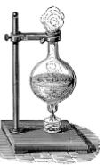
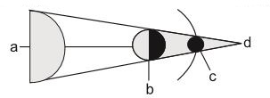
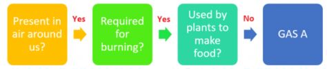
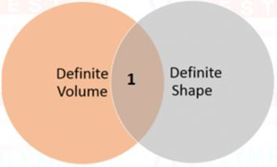
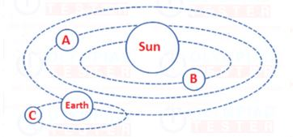

 <!DOCTYPE html>
<html>
<head>
	<meta charset="UTF-8">
	<style type="text/css">
.radio-toolbar input[type="radio"] {
    display:none;
}

.radio-toolbar label {
    display:inline-block;
    background-color:#ddd;
    padding:4px 11px;
    font-family:Arial;
    font-size:18px;
}
.greenColor{color:green}
.radio-toolbar input[type="radio"]:checked + label {
    background-color:#bbb;
}
#visit_return_button{
    background-color:#2a25bd;
    border: 2px solid #2a25bd;
    color: #FFF;
    text-align: center;
    -webkit-border-radius: 4px;
    -moz-border-radius: 4px;
    border-radius: 4px;
    padding: 10px;
    }
    </style>

</head>
 <body>
<script type="text/javascript" src="../../practise_code.js"></script>
<script>

// Matter, Earth, Atmosphere and Universe.
var questions = [
["Pure or distilled water is not used for drinking mainely because","it is poisonous" ,"it does not contain any minerals required by the body","it is becteria free","it is not easily available","B"],
 ["Which of these can most easily attract magnets ?","Wood","Notebook","Iron nails","Eraser","C"],
 ["Which of these probably causes the most air pollution?","Cars","Wind","Rain","Trees","A"],
["A water containing jar is heated by a Bunsen burner as shown below. How does water on the upper surface of the jar is heated. <BR>","Conduction","Convection","Radiation","All of these","B"],


 ["The heaviest and lowermost layer of the atmosphere is called:","Stratosphere","Exosphere","Thermosphere","Troposphere","D"],

["Ozone in the upper atmoshphere is produced from","PHOTOCHEMICAL REACTIONS","LIGHTINING","MODEL FRACTALS","NONE OF THESE","A"],
["Ozone layer thickness is measured in","MILLIMETER","CENTIMETER","DECEBLES","DOBSON","D"],
["Look at the figure. It shows lunar eclipse. Where will be the Earth in it ?<BR>","a","b","c","d","B"],

["Which of these is needed to measure the mass of a rock?","A balance","A barometer","A metric ruler","A thermometer","A"],
 ["Oxygen, nitrogen, and carbon dioxide may be grouped together because at room temperature they are  all  —","Colloids","Solids","Gases","Liquids","C"],
[" The Moon revolves around -","Itself","The solar system","The Earth","The star","C"],
["Increasing skin cancer high mutation rate are the result of","OZONE DEPLETION","ACID RAIN","CO POLLUTION" ,"NONE OF THESE","A"],
["How much % oxygen in the air","21%","78%","1%","2%","A"],
["Family of eight planets and moons,countless astroids,comets and other objects all circling sun is known as","GALAXY","SOLAR SYSTEM","MILKY WAY","CLUSTER","B"],
["If we studied space for a year,we would see different stars every","YEAR","MONTH","SEASON","WEEK","C"],
["We know that earth is a part of","SUN","MOON","SOALR SYSTEM","JUPITER","C"],
["A revolution of earth takes about","A DAY","AN HOUR","A WEEK","A YEAR","D"],
["Our view of space keeps on changeing because earth is","revolving","at an angle of 25","cold","beneath of sun","A"],

["Which gas is peresent in atmosphere in maximum quantity","OXYGEN","CARBON DIEOXCIDE","HELIUM","NITROGEN","D"],

["The upper most fertile layer of earth crest is called","SOIL","HUMUS","METEL","ELEMENT","A"],
["Sunlight and heat are----of ecosystem","BIOTIC","A BIOTIC","NATURAL","INORGANIC","B"],
["Which one is a abiotic factor of a enviornment","DECOMPOSER","CONSUMER","PRODUCER","AIR","D"],
["Shape,size and other features of plants depends upon their","TEMPERATURE ONLY","SOIL TYPE ONLY","AVAILABILITY OF WATER","SURRONDINGS","D"],
["Burning of fossilfuel cause","SOUND POLLUTION","AIR POLLUTION","WATER POLLUTION","SOIL POLLUTION","B"],
["Food chain start with","RESPIRATION","DECOMPOSING","DECAY","PHOTOSYNTHESIS","D"],

["Which is a natural luminous body","SUN","BURNING LAMP","BURNING CANDLE","MOON","A"],
["Moon is the","LARGEST STAR OF SOLAR SYSTEM","NATURAL STALITE OF EARTH","NEAREST STAR OF SOLAR SYSTEM","ARTIFICIAL SETALITE OF EARTH","B"],
["The celestial body nearest to the earth","THE SUN","THE MOON","VENUS","PROXIMA","C"],
["A piece of rock which burns as it fall through the atmoshphere is","ASTROIDS","METROIDS","METEOR","METEORITE","B"],
["Millions of star together form","COMET","GALAXY","SOLAR SYSTEM","CONSTELLATION","B"],
["Small celestial body revolving around a planet is called","SATALLITE","GALAXY","COMET","METROIDS","A"],
["Day or night occurs on the earth due to","REVOLUTION","ROTATION","HORIZON","SPHERICAL","B"],
["In solar system,the planets between which the earth lies are","MERCURY AND MASS","MOON AND SUN","VENUS AND MERCURY","VENUS AND MARS","D"],
["Heavenly bodies that emit heat and light in one year are called","ASTROIDS","PLANETS","STARS","MOON","C"],

["What is atmosphere","BLANKET OF AIR","SUBSTANCE THAT MAKE US UNFIT","SUBSTANCE THAT MAKE WATER UNFIT","THE BLANKET OF LAYER SURROUNDING OF EARTH","D"],


["The time it takes for Earth to rotate on its axis is one","Day","Month","Season","Year","A"],
["When the layer of air that surrounds the Earth presses down, this is","Heat","Temperature","Air pressure","Precipitation","C"],
["The time it takes the Earth to orbit the Sun is one ","Year","Season","Month","Day","D"],
["In below figure,Raghav setup an experiment. When he poured into the funnel .<BR>","Hydrogen","Nitrogen","Oxygen","Carbon dioxde","C"],
["Clouds are formed high up in the sky beacuse ________","As we go up, the temperature decreases. This allows the water vapour to cool and form water droplets which in turn form clouds.","The pressure near the surface of the earth will not allow the formation of clouds.","There is no specific explaination for this","God cause clouds and he stays up in the sky","A"],
["Three transparent boxes A, B and C were placed under Sun at 11:00 AM. Different items were placed into each boxes and boxes were sealed. <BR> Which graph correctly shows the amount of oxygen in the boxes at 11:00 AM and 3:00 PM.","Graph 1","Graph 2", "Graph 3","Graph 4","B"],
["What would be 1 in venn diagram - <BR>","Oxygen","Milk","Ball","Water","C"],
["Identify the incorrect statement- <BR>","C can not be seen from Earth because is reflects light from B","A takes longer time to orbit the Sun than B","The length of day in earth is determined by revolution of C around it","Like the earth, C rotates around its own axis","C"],


]
</script>
<table style="width:100%">
<tr>
  <td></td><td style="vertical-align:left"><p id="demo" ></p></td> 
</tr>
</table>

<h2 id="test_status"></h2>
<div id="test"></div>
</body>
</html>
